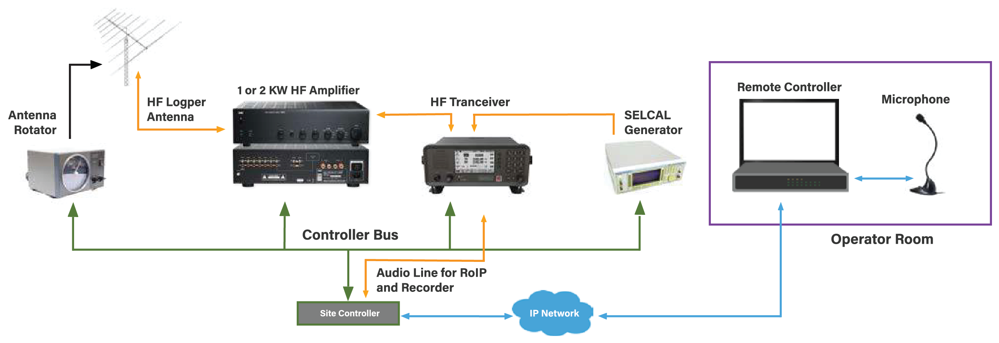
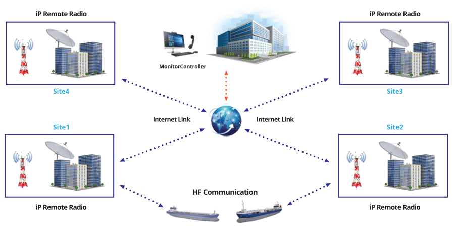
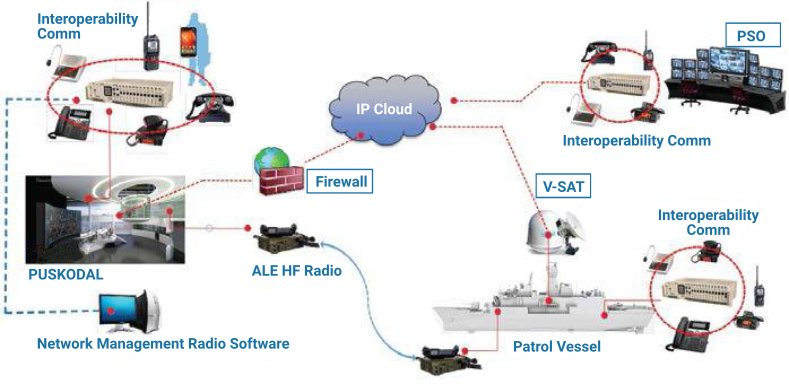
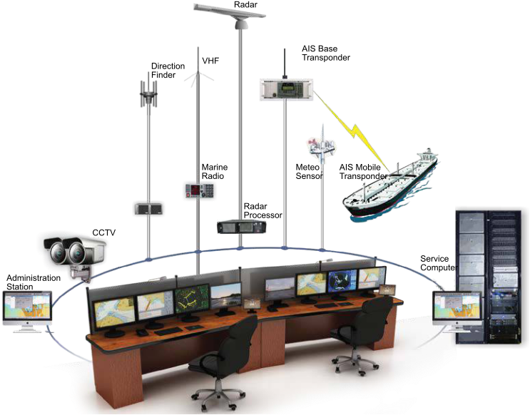
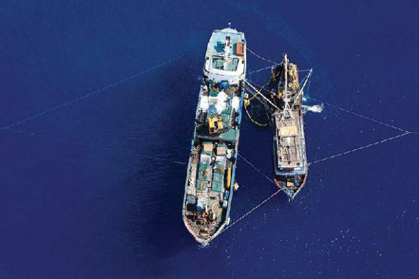
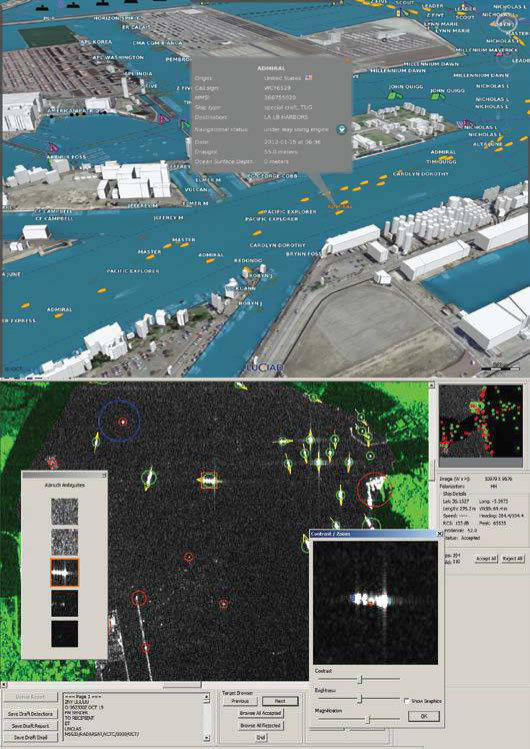

HF Communication Radio for Aircraft Flight


Applicable For
- Airlines / Aircraft Operator
- Marine Affairs, Fisheries
- Governments
Aircraft operators need to monitor its fleet as both a commercial and cargo, to know the position and status of each airplane, especially for the long-distance route.
The aircraft will be equipped with HF radio and Selective Calling (SELCAL) Decoder to respond calls from Ground Operator.
Ground Operator will be equipped with HF Radio, RF Amplifier, SELCAL Generator, Antenna Rotators and Voice Recorder integrated as communication and monitoring system, capable to communicate with long distance flight.
HF Radio and other devices can be operated remotely through the Internet Protocol. Antenna used is Log Periodic type so that the communication in a specific direction can be optimize.

Advantages
- User friendly
- Flexible configuration
- Graphic user interface (GUI)
Software Controller
- Radio Transceiver controller
- Amplifier Controller
- SELCAL Controller
- Antenna Rotator Controller
IP Remote Radio

Applicable For
- Governments
- Army, Navy, AirForce, Police
- Coast Guard
- Fisheries
- SAR Organization
- Coastal Station
- Offshore / Onshore Operation
- Remote Vital Object Protection
- Command Center
IP Remote Radio - capable to integrate the MF / HF / VHF and UHF Radio. IP Remote Radio consist of IP-based radios that can be operated to cover unlimited distance. IP Remote Radio can be installed at a locations but able to cover from anywhere.
IP remote radio at each locations connected to the Internet so that it can be operated from a central office that have radio server and monitor radio operators installed.
Radio Remote IP advantages:
- IP based / can be operated for unlimited distance
- Capable of recording sounds and messages
- Capable to control the radio setting such as channel, squelch, power, volume etc remotely
- Support for unmanned radio site
- Open and modular system architecture to make easy on future development
- Capable to do some radio operation in one radio workstation site
- Able to receive DSC messages
- Capable to know the status of radio site / maintenance remotely
- GIS (Geographical Information System) solution featuring the fleet position on a map based on the message AIS and DSC messages
- The operator using the touch screen display and easy to operate i. Can be integrated with PBX / IP phone.
- Compatible with all analog (non-IP) radio products
Secure Multiplatform Communication System

Applicable For
- Governments
- Army, Navy, AirForce, Police
- Coast Guard
- Fisheries
- SAR Organization
- Law Enforcement
To maintain the area security, coordination is needed in terms to quickly find out the status on the spot and ensure to take right action promptly.
Conducting covert operations a secure network is required in the communication of data, voice, images and video. The communication equipment with intercom, HF, VHF, UHF radio and video streaming must be well secure integrated. Secure Multiplatform Communication is an integration solution of a variety of new or existing equipment.
Secure Multiplatform Communication System consists of:
- Audio Gateway management : Integrate the communication at the Headquarters and patrol boats into an integrated communication using IP networks communication, can be managed remotely and communication between sites simultaneously.
- Mesh Network : Is a network system that has the ability to distribute data through various existing paths (multi-path), having self-recovery ability when there is a broken line, data will be sent through other available channels.
- Automatic Link Establishment : High-level HF radio telecommunications technology to improve communication effectiveness through computerized frequency management.
- Tactical Compression Encoder : Used to send compressed picture and video from patrol boats, sea riders, and operating personnel with a minimum bandwidth of up to 10 kbps.
Maritime Integrated Surveillance System

Applicable For
- Directorate General of Sea Transportation
- Customs
- Coast Guard
- Ministry of Fisheries
- Search & Rescue Agency
- Marine Police
- Offshore Company
- Port Authority
- Harbor Master
The system capable to do special task on the maritime surveillance thanks to special analytic module that can gather and analyze the data from some sensors, such as:
- Coastal or Mobile Radar
- AIS Base Station
- AIS Satellite
- Radar Satellite
- VMS (Vessel Monitoring System)
- Imagery Satellite
- Long Range Coastal Camera
- etc
The parameter of analytic can be customized depend on the user requirement for special purpose, such as:
- Transshipment detection
- AIS Base Station
- Illegal fishing
- Illegal trafficking
- Anti-collision avoidance
- Smuggling detection
- And other illegal activity at sea

Advantages of the system:
- Integration and presentation of data from different sensors and coordination of local systems
- Accurate detection and tracking of the small and fast targets in the various environmental conditions (rain, fog, snow, sea states)
- Visual identification of the ships in worse weather conditions (darkness, fog, heavy rain)
- Targets classification (types of ships)
- Configurable crossing line (border)
- Identification of the ships and other navigational objects
- Detection of illegal activity
- Provision data for SAR operation
- Recording / playback of all data and tracks synchronously for violence analysis
- Pictures / moves capture for documental evidence
- Automatic identification of dangerous situations and activation of alarm signals
- Customization of the analytic parameter
- Integration with other system
